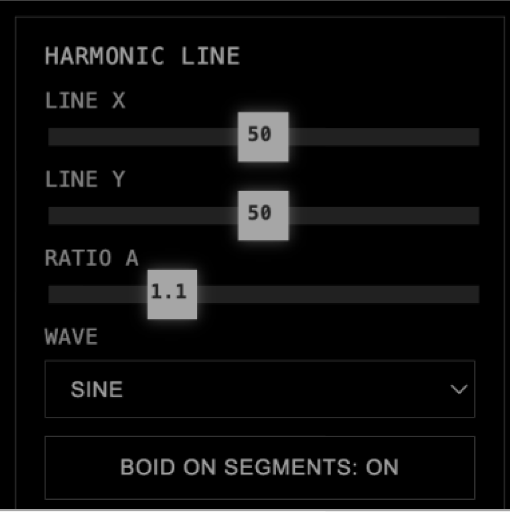
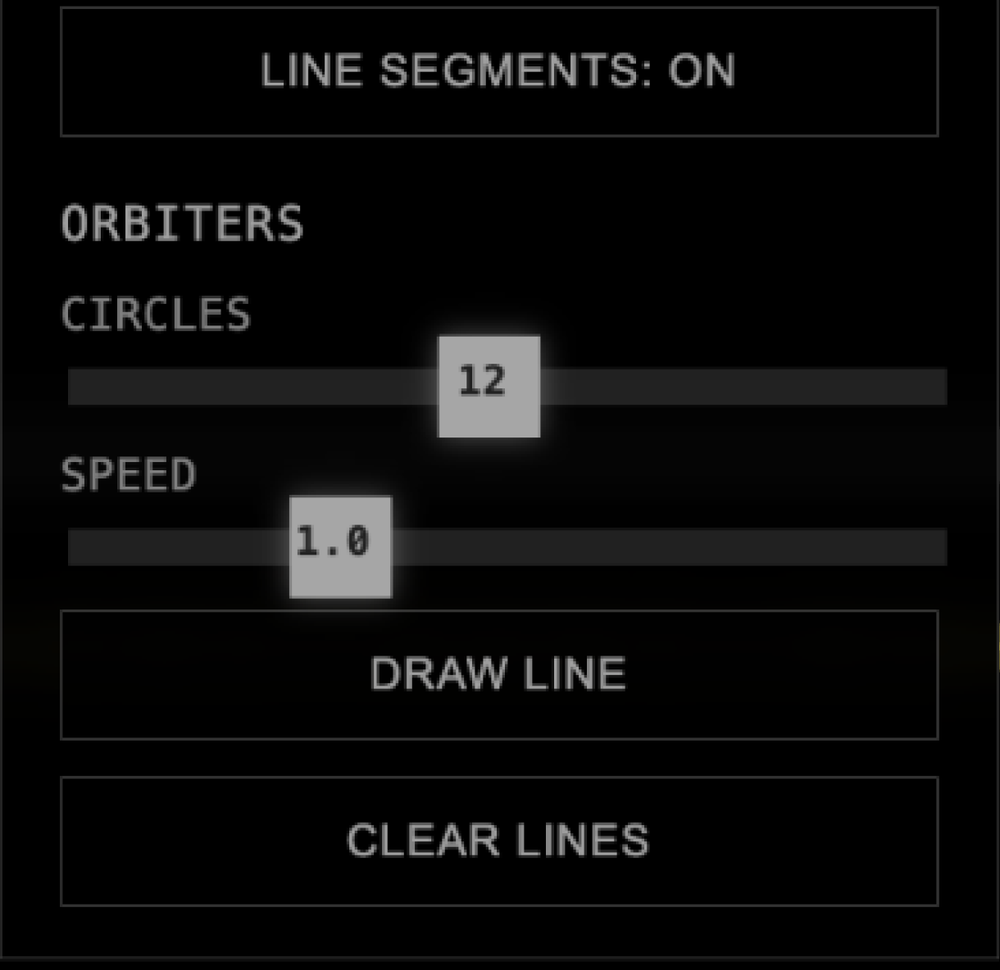
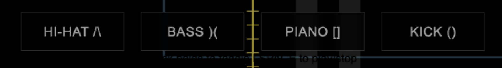
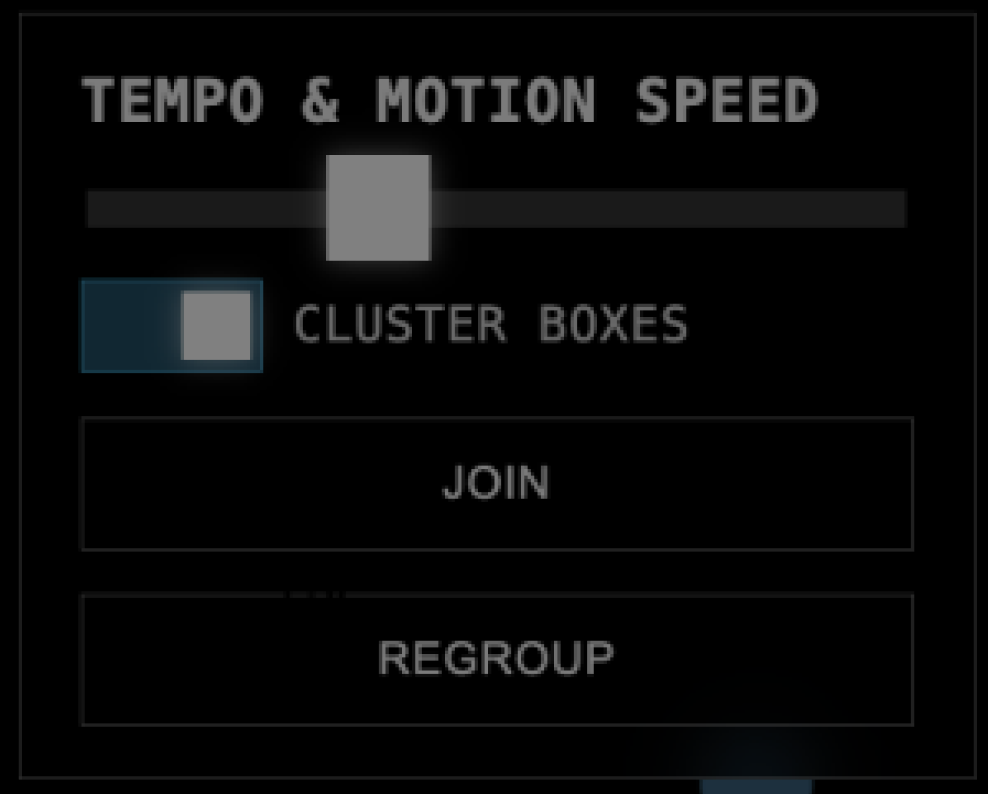

Live Version
BOID SEQUENCER
A sequencer that hides its own timeline. Boids trigger sounds when they cross lines you draw — you shape the space, the rhythm emerges.
Under the hood: real-time flocking simulation, sample-accurate audio, synchronized graphics.
On the surface: something you play with until it sounds interesting.
Built with p5.js + Tone.js
[ User Manual]

Harmonic Line
Control the X/Y position and ratio of the harmonic line that triggers boid sounds

Orbiters
Adjust the number of orbiting circles and their speed to create rhythmic density

Instruments
Toggle between hi-hat, bass, piano, and kick — each with independent step sequences

Tempo & Motion
Control global tempo and boid clustering behavior